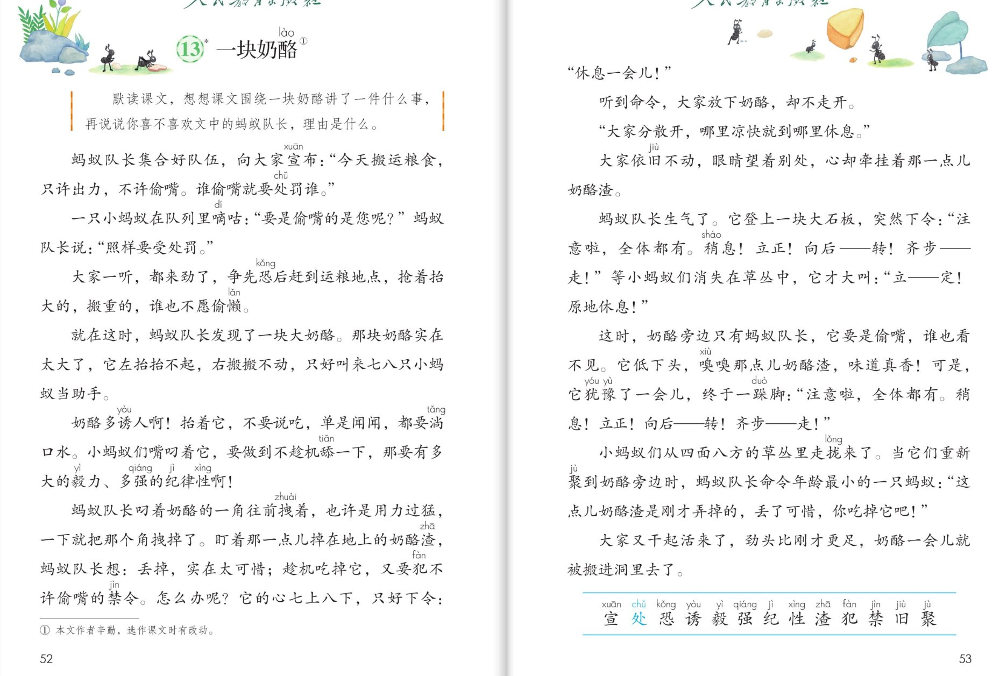

×
🔊 手机听不到声音怎么办？
① 先把手机
媒体音量调大 ，确认没开静音、没连蓝牙耳机；在微信里打开的，点右上角「⋯ → 用浏览器打开」。
② 还是没声音？到应用商店免费下载
Microsoft Edge 浏览器 （它自带朗读发声），用它打开本页面就能出声。
③ 换了 Edge 仍然没声音，说明这部手机的
硬件/系统不支持 网页朗读（多为老旧机型）；近几年买的新手机一般都能正常播放。
→ 打开声音自检
🧀 第 13 课《一块奶酪》· 有声图文带读
统编版语文 · 第四单元·阅读（略读课）· 课本 P52~53 · 作者：辛勤 · 素养升级版（对标 2022 课标第二学段）
课文 14 个自然段
素养目标 4
会认字 13
听写词 12
童话探究 6 卡
深入理解 8 题
本课本领 读口令·讲出理由
🎧 这样学（可随时点任意一句、一个字、一个词单独听）： ① 听读课文 ——一句一句读，读到哪一句哪一句发光；边读边想蚂蚁队长心里的斗争。② 学字词 ——13 个会认字，点一个读一个（处、强、禁是多音字）。③ 词语·听写 ——听写 12 个课文词（读两遍→你写→报答案→听示范句），再听 4 组近义词辨析。④ 深入理解 ——8 道题（认知 / 理解 / 运用 / 拓展），先想后看。⑤ 分角色朗读 ——旁白、蚂蚁队长、小蚂蚁们，读出队长的威严和心里的挣扎。🌟 本单元任务：感受童话丰富的想象，体会其中的真善美——再试着自己编童话、写童话！
📌 本单元语文要素 ——单元导语（P45 照录）：乘着想象的翅膀，游历奇妙的童话王国，看花儿跳舞，听星星歌唱 ；要点：感受童话丰富的想象，体会其中的真善美 ；试着自己编童话、写童话 。本课略读，自己读、自己想、自己说。
🀄 文化自信
🀄 文化自信
读中国作家辛勤的童话，体会童话里纪律与友爱的中国智慧。
🗣 语言运用
🗣 语言运用
认识 13 个生字；积累“宣布、诱惑、七上八下、争先恐后”等词语，读好口令和破折号。
💡 思维能力
💡 思维能力
默读课文，理清围绕奶酪发生的事，说说对蚂蚁队长的看法并讲出理由。
🎨 审美创造
🎨 审美创造
分角色读出队长的威严和心里的挣扎，评一评这位队长，感受严于律己的美德。
点段前的 ①②③ 听整段
🔁 跟读模式：关
👁 隐藏注音（自测用）
字卡上的拼音标的是本课要认的字，读音来自课本生字表
🎤 朗读要求（老师标准） 不添字、不漏字 ；不出声、不指读 ，想想课文讲了一件什么事；果断威严 ，口令读得响亮 ，破折号处稍稍拖长 ；慢 ，读出七上八下 的感觉。
🤫 默读小提示（导语任务就是默读） 听读 ——点句子听老师读；第二步 默读 ——不出声、不指读，想想课文围绕一块奶酪讲了一件什么事 ；第三步 说一说 ——你喜不喜欢文中的蚂蚁队长，理由是什么 。
①
蚂蚁队长集合好队伍，向大家宣布：“今天搬运粮食，只许出力，不许偷嘴。谁偷嘴就要处罚谁。”
📌 这一段讲：蚂蚁队长宣布禁令：搬运粮食只许出力，不许偷嘴，谁偷嘴就要处罚谁。
②
一只小蚂蚁在队列里嘀咕：“要是偷嘴的是您呢？”蚂蚁队长说：“照样要受处罚。”
📌 这一段讲：小蚂蚁嘀咕：要是偷嘴的是您呢？蚂蚁队长说：照样要受处罚。
③
大家一听，都来劲了，争先恐后赶到运粮地点，抢着抬大的，搬重的，谁也不愿偷懒。
📌 这一段讲：大家争先恐后赶到运粮地点，抢着干活，谁也不愿偷懒。
④
就在这时，蚂蚁队长发现了一块大奶酪。那块奶酪实在太大了，它左抬抬不起，右搬搬不动，只好叫来七八只小蚂蚁当助手。
📌 这一段讲：蚂蚁队长发现一块大奶酪，太大搬不动，只好叫来七八只小蚂蚁当助手。
⑤
奶酪多诱人啊！抬着它，不要说吃，单是闻闻，都要淌口水。
小蚂蚁们嘴叼着它，要做到不趁机舔一下，那要有多大的毅力、多强的纪律性啊！
📌 这一段讲：奶酪太诱人，叼着它不趁机舔一下，要有很大的毅力和很强的纪律性。
⑥
蚂蚁队长叼着奶酪的一角往前拽着，也许是用力过猛，一下就把那个角拽掉了。
盯着那一点儿摔在地上的奶酪渣，蚂蚁队长想：丢掉，实在太可惜；趁机吃掉它，又要犯不许偷嘴的禁令。
怎么办呢？
它的心七上八下，只好下令：
📌 这一段讲：队长不小心拽掉一块奶酪渣，丢掉可惜、吃掉又犯禁令，心七上八下，只好下令。
⑦
“休息一会儿！”
📌 这一段讲：蚂蚁队长下令：休息一会儿！
⑧
听到命令，大家放下奶酪，却不走开。
📌 这一段讲：听到命令，大家放下奶酪却不走开。
⑨
“大家分散开，哪里凉快就到哪里休息。”
📌 这一段讲：蚂蚁队长又下令：大家分散开，哪里凉快就到哪里休息。
⑩
大家依旧不动，眼睛望着别处，心却牵挂着那一点儿奶酪渣。
📌 这一段讲：大家依旧不动，眼睛望着别处，心却牵挂着奶酪渣。
⑪
蚂蚁队长生气了。
它登上一块大石板，突然下令：“注意啦，全体都有。稍息！立正！向后——转！齐步——走！”
等小蚂蚁们消失在草丛中，它才大叫：“立——定！原地休息！”
📌 这一段讲：蚂蚁队长生气了，登上一块大石板下口令把小蚂蚁们支进草丛，才大叫原地休息。
⑫
这时，奶酪旁边只有蚂蚁队长，它要是偷嘴，谁也看不见。
它低下头，嗅嗅那点儿奶酪渣，味道真香！可是，它犹豫了一会儿，终于一跺脚：“注意啦，全体都有。稍息！立正！向后——转！齐步——走！”
📌 这一段讲：队长独自面对奶酪渣，嗅嗅真香，犹豫了一会儿，终于一跺脚把大家叫回来。
⑬
小蚂蚁们从四面八方的草丛里走拢来了。
当它们重新聚到奶酪旁边时，蚂蚁队长命令年龄最小的一只蚂蚁：“这点儿奶酪渣是刚才弄掉的，丢了可惜，你吃掉它吧！”
📌 这一段讲：小蚂蚁们重新聚到奶酪旁，队长命令年龄最小的蚂蚁吃掉那点儿奶酪渣。
⑭
大家又干起活来了，劲头比刚才更足，奶酪一会儿就被搬进洞里去了。
📌 这一段讲：大家劲头更足，奶酪一会儿就被搬进洞里去了。
🤔 想一想（点我可跳过）
双页宽图自动占整行

第 52~53 页 · 课文 · 认读字表
📖 人教版《语文》三年级上册 · 课本第 52~53 页 · 图片仅供个人学习，版权归人民教育出版社所有
📖 导语框 默读课文，想想课文围绕一块奶酪讲了一件什么事 ，再说说你喜不喜欢文中的蚂蚁队长，理由是什么 。略读课 ：生字只要求认读，要自己读、自己想、自己说。
点一个字，听读音、词语和在课文里的句子；处、强、禁是多音字
点一行，听读这一组词语
宣 宣布 宣告 宣传
处 处罚 到处 相处
诱 诱人 诱惑 引诱
禁 禁令 禁止 严禁
读两遍 → 你在纸上写 → 报答案 → 听示范句
准备听写 · 共 12 个词
○ ○ ○
点下面的「开始听写」，听到一个词就写一个词。
▶ 开始听写
🔁 再读一遍
👁 看答案
点词听读，点句子听示范句，再自己说一句
1 宣布 课文词
示范句：蚂蚁队长集合好队伍，向大家宣布。
✏️ 我也能说：谁宣布。
2 处罚 课文词
示范句：谁偷嘴就要处罚谁。
✏️ 我也能说：谁要受处罚。
3 争先恐后 课文词
示范句：大家争先恐后赶到运粮地点。
✏️ 我也能说：谁争先恐后。
4 诱人 课文词
示范句：奶酪多诱人啊！
✏️ 我也能说：什么诱人。
5 毅力 课文词
示范句：那要有多大的毅力、多强的纪律性啊！
✏️ 我也能说：要有很大的什么。
6 强大 课文词
示范句：团结起来力量强大。
✏️ 我也能说：什么强大。
7 纪律性 课文词
示范句：小蚂蚁们有很强的纪律性。
✏️ 我也能说：谁有纪律性。
8 奶酪渣 课文词
示范句：盯着那一点儿摔在地上的奶酪渣。
✏️ 我也能说：盯着什么。
9 犯规 课文词
示范句：趁机吃掉它，就要犯禁令了。
✏️ 我也能说：吃掉它怎么样。
10 禁止 课文词
示范句：搬运粮食，禁止偷嘴。
✏️ 我也能说：禁止什么。
11 依旧 课文词
示范句：大家依旧不动。
✏️ 我也能说：谁依旧不动。
12 团聚 课文词
示范句：当它们重新聚到奶酪旁边时。
✏️ 我也能说：谁重新聚到奶酪旁边。
相同点 / 不一样在哪 / 各造一句
依旧 — 仍然
相同：都表示和原来一样，没有改变。
不一样：依旧 偏重照旧、跟以前一样；仍然 偏重情况持续、没有变化。
依旧：大家依旧不动。
牵挂 — 挂念
相同：都表示心里惦记着。
不一样：牵挂 偏重心里放不下；挂念 偏重想念、惦记。
牵挂：心却牵挂着那一点儿奶酪渣。
犹豫 — 迟疑
相同：都表示拿不定主意。
不一样：犹豫 偏重反复考虑、下不了决心；迟疑 偏重动作慢、不果断。
犹豫：它犹豫了一会儿，终于一跺脚。
七上八下 — 心神不定
相同：都表示心里不安。
不一样：七上八下 偏重心里乱糟糟、忐忑；心神不定 偏重精神和心思都不安稳。
七上八下：它的心七上八下，只好下令。
口令连读 稍息！立正！向后——转！齐步——走！——读得响亮有力
心理描写 心七上八下 犹豫了一会儿 心却牵挂着
多……啊 奶酪多诱人啊！ 多大的毅力、多强的纪律性啊！
破折号拖音 向后——转 立——定 齐步——走
点一张卡，听这条线索
单元导语说：乘着想象的翅膀 ，游历奇妙的童话王国。这篇童话写的是蚂蚁王国的纪律考验——六张卡片，看看作家怎么把心里的斗争 写活。
🧀 题目里藏着事
一块奶酪牵出一件什么事？读完全文再回头看题目——讲的全是围绕这块奶酪发生的考验。
👮 严格的队长
开头宣布禁令，连自己偷嘴也照样受处罚——先立规矩，再看执行。
😋 馋人的奶酪
不要说吃，单是闻闻都要淌口水——奶酪越诱人，考验越大。
💭 心理描写真传神
心七上八下、犹豫了一会儿、终于一跺脚——不说一句话，心里的斗争全写出来了。
📣 口令里的画面
稍息！立正！向后——转！齐步——走！——口令一喊，队伍的画面就在眼前。
🤲 让渣的巧思
最后把渣命令给年龄最小的蚂蚁吃——对自己严格，对伙伴关爱，这就是让人佩服的队长。
标「答案不唯一」的题，说得有道理都对
认知 课文围绕一块奶酪讲了一件什么事？（导语照录）看解析
🤔 想一想
解析：
蚂蚁队长在搬运粮食时宣布不许偷嘴的禁令，不小心拽掉一块奶酪渣，它心里七上八下，两次下口令支开队伍又召回，最后把那点儿渣命令给年龄最小的蚂蚁吃——大家劲头更足，把奶酪搬回了洞里。
🌈 答案不唯一，说得有道理都对
认知 蚂蚁队长宣布了什么禁令？看解析
🤔 想一想
解析：
今天搬运粮食，只许出力，不许偷嘴。谁偷嘴就要处罚谁——偷嘴的是队长自己也照样要受处罚。
🌈 答案不唯一，说得有道理都对
理解 蚂蚁队长的心里是怎么七上八下的？看解析
🤔 想一想
解析：
奶酪渣丢掉，实在太可惜；趁机吃掉它，又要犯不许偷嘴的禁令——丢了可惜、吃了犯规，左右为难。
🌈 答案不唯一，说得有道理都对
理解 蚂蚁队长两次下口令有什么不同？看解析
🤔 想一想
解析：
第一次下令休息、分散开，是想支开大家处理奶酪渣；第二次是它犹豫后终于一跺脚，把大家叫回来。两次口令都响亮威严，可心里想的完全不同。
🌈 答案不唯一，说得有道理都对
理解 你喜不喜欢文中的蚂蚁队长？理由是什么。（导语照录）看解析
🤔 想一想
解析：
示例：喜欢——它纪律严明（自己偷嘴也照样受罚）、严于律己（谁也看不见也不偷嘴）、关爱伙伴（把渣给年龄最小的吃）。🌈 答案不唯一，说出理由即可。
🌈 答案不唯一，说得有道理都对
运用 “休息一会儿！”“大家分散开……”该怎么读？看解析
🤔 想一想
解析：
示范：队长的命令读得果断、有威严；“它的心七上八下”读得不安、犯愁；“味道真香”读得馋；“犹豫了一会儿”读得慢，让人感觉心里在斗争。
🌈 答案不唯一，说得有道理都对
运用 从哪些地方看出蚂蚁队长严于律己？看解析
🤔 想一想
解析：
示例：①小蚂蚁嘀咕“要是偷嘴的是您呢”，它说照样要受处罚；②独自面对奶酪渣，谁也看不见，它犹豫后还是没有偷嘴；③最后把渣让给年龄最小的蚂蚁。🌈 答案不唯一。
🌈 答案不唯一，说得有道理都对
拓展 这个故事让你想到了什么？（导语延伸：说说你的理由）看解析
🤔 想一想
解析：
提示：可以想纪律的重要——规矩先管自己再管别人；可以想榜样的力量——队长做得正，大家劲头更足。🌈 说不唯一，讲清理由就好。
🌈 答案不唯一，说得有道理都对
💬 想象支架：先 宣布禁令 → 再 发现大奶酪 → 接着 拽掉奶酪渣心里七上八下 → 然后 两道口令支开又召回 → 最后 把渣让给最小的蚂蚁。轮到你了：说说你喜不喜欢这位队长，理由是什么。
点一个角色，听他（她）的台词
🎭 旁白
蚂蚁队长集合好队伍，向大家宣布，今天搬运粮食，只许出力，不许偷嘴。谁偷嘴就要处罚谁。 / 蚂蚁队长叼着奶酪的一角往前拽着，也许是用力过猛，一下就把那个角拽掉了。
💬 要读出人物语气 ：命令果断威严，心里话读得慢
🎭 蚂蚁队长
今天搬运粮食，只许出力，不许偷嘴。谁偷嘴就要处罚谁。 / 大家分散开，哪里凉快就到哪里休息。 / 注意啦，全体都有。稍息！立正！向后——转！齐步——走！ / 这点儿奶酪渣是刚才弄掉的，丢了可惜，你吃掉它吧！
💬 要读出人物语气 ：命令果断威严，心里话读得慢
🎭 嘀咕的小蚂蚁
要是偷嘴的是您呢？
💬 要读出人物语气 ：命令果断威严，心里话读得慢
🎭 众蚂蚁·报口令
休息一会儿！大家分散开，哪里凉快就到哪里休息。 / 注意啦，全体都有。稍息！立正！向后——转！齐步——走！立——定！原地休息！
💬 要读出人物语气 ：命令果断威严，心里话读得慢
🎭 小评委·夸夸队长
丢掉可惜，吃掉犯规——心七上八下，最后把渣给了年龄最小的蚂蚁。 / 我先夸它纪律严明：自己定的规矩，自己带头守；再夸它关爱伙伴：最后一点儿渣，让最小的吃。
💬 要读出人物语气 ：命令果断威严，心里话读得慢
每题给自己打 1~3 颗星
1. 我能正确认读 13 个会认字，记准处、强、禁三个多音字的读音。 ☆ ☆ ☆
2. 我能默读课文，说清围绕一块奶酪讲了一件什么事。 ☆ ☆ ☆
3. 我能从课文里找出蚂蚁队长严于律己的证据。 ☆ ☆ ☆
4. 我能读好队长的命令和口令，读出威严和心里的挣扎。 ☆ ☆ ☆
5. 我能说出喜不喜欢蚂蚁队长，并讲清理由。 ☆ ☆ ☆
✍️ 小练笔 ：夸一夸蚂蚁队长 ——把你的理由写成几句话（导语任务）。编一个“考验”的小童话 ：比如小蜜蜂发现了一大罐蜂蜜，蜂王定的规矩是不许多吃，它自己会怎么做？斗争 ，规矩要先管自己 ，结尾要让大家服气 。